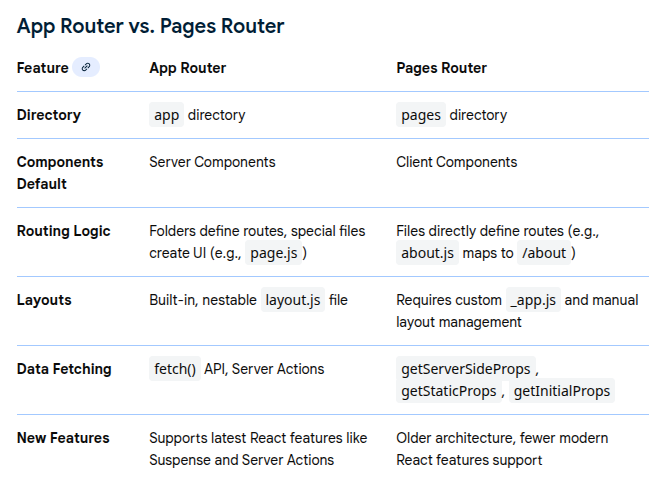

Data Fetching - Deep Dive
Source - Section 5 Udemy Course
Right now it is actually a bit overwhelming. This seems like the point to stop and spend some days or maybe the first two weeks. NextJS is important and while doing
it I can cover a lot of fundamentals. Basically I must look to master and command the material covered in the first seven sections. This will enable me to create decent
projects by my own. This is a doable goal and seems like the ideal place to spend my time. Because here I will be able to do something that will make me happy in return
as I will actually be able to see myself progressing. Otherwise I will be prone to losing motivation and good vibes. And that would be far from ideal because this is what
that is pushing me ahead right now.
Some points to note:
There are multiple ways to fetch data in a NextJs application. Firstly, one can fetch data from an external source using an HTTP request. Alternatively, one can also fetch data from
a local source or database too. This second source is also under user's control because it will be happening on the server-side.
Therefore, we see that there are two approaches to data fetching in NextJS.
- Client-side data fetching
- Server-side data fetching
App Router
The Next.js App Router is a modern, file-system based routing solution built on React Server Components (RSCs). Introduced in Next.js 13, it is the recommended router for new
applications due to its advanced features, flexibility, and performance optimizations over the older "Pages Router".
Key Features and Concepts
-
File-System Routing: Routes are defined using folders within an app directory. Each folder represents a URL segment, and special files within the folders are used to create
the UI for that route.
-
React Server Components (RSCs) by Default: Components in the app directory are automatically treated as Server Components, which run on the server. This improves
performance by reducing the amount of client-side JavaScript, enabling faster initial page loads and better SEO. You can use the "use client" directive to explicitly mark
components that require client-side interactivity (like state or event handlers).
-
Nested Layouts: The App Router simplifies shared UI components (like headers or sidebars) with layout.js files. Layouts can be nested, and only the specific page content
re-renders during navigation, preserving the layout's state.
-
Data Fetching: Data fetching is simplified. You can use the native fetch() API directly within Server Components, which offers automatic caching and revalidation options.
-
Loading States and Error Handling: The loading.js file automatically creates a loading UI (wrapped in a React Suspense boundary) while a route's content is being fetched
on the server. Similarly, error.js defines error boundaries for granular error handling.
-
Streaming: The router supports streaming server-side rendering, which allows parts of the page to be sent to the browser as they are ready, improving perceived performance
and Time To First Byte (TTFB).
-
Advanced Routing: It enables complex routing patterns such as parallel routes (showing multiple independent pages in the same view) and intercepting routes (loading a route
in the context of another, e.g., a modal).
